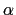

Next: List of available colvar
Up: Collective Variables Interface
Previous: Computational cost of colvars
Contents
Index
Collective variable components (basis functions)
Each colvar is defined by one or more components (typically
only one). Each component consists of a keyword identifying a
functional form, and a definition block following that keyword,
specifying the atoms involved and any additional parameters (cutoffs,
``reference'' values, ...).
The types of the components used in a colvar determine the properties
of that colvar, and which biasing or analysis methods can be applied.
In most cases, the colvar returns a real number, which is computed by
one or more instances of the following components:
- distance: distance between two groups;
- distanceZ: projection of a distance vector on an axis;
- distanceXY: projection of a distance vector on a plane;
- distanceInv: mean distance between two groups of atoms (e.g. NOE-based distance);
- angle: angle between three groups;
- coordNum: coordination number between two groups;
- selfCoordNum: coordination number of atoms within a
group;
- hBond: hydrogen bond between two atoms;
- rmsd: root mean square deviation (RMSD) from a set of
reference coordinates;
- eigenvector: projection of the atomic coordinates on a
vector;
- orientationAngle: angle of the best-fit rotation from
a set of reference coordinates;
- orientationProj: cosine of orientationProj;
- spinAngle: projection orthogonal to an axis of the best-fit rotation
from a set of reference coordinates;
- tilt: projection on an axis of the best-fit rotation
from a set of reference coordinates;
- gyration: radius of gyration of a group of atoms;
- inertia: moment of inertia of a group of atoms;
- inertiaZ: moment of inertia of a group of atoms around a chosen axis;
- alpha: 
-helix content of a protein segment.
- dihedralPC: projection of protein backbone dihedrals onto a dihedral principal component.
Some components do not return scalar, but vector values.
They can only be combined with vector values of the same
type, except within a scripted collective variable.
- distanceVec: distance vector between two groups;
- distanceDir: unit vector parallel to distanceVec;
- orientation: best-fit rotation, expressed as a unit quaternion.
In the following, all the available component types are listed, along
with their physical units and the limiting values, if any. Such
limiting values can be used to define lowerBoundary and
upperBoundary in the parent colvar.
Subsections
Next: List of available colvar
Up: Collective Variables Interface
Previous: Computational cost of colvars
Contents
Index
vmd@ks.uiuc.edu